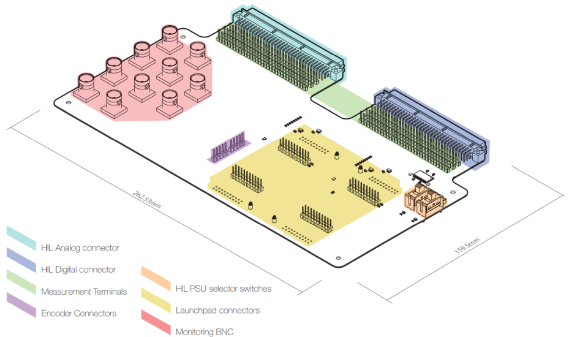
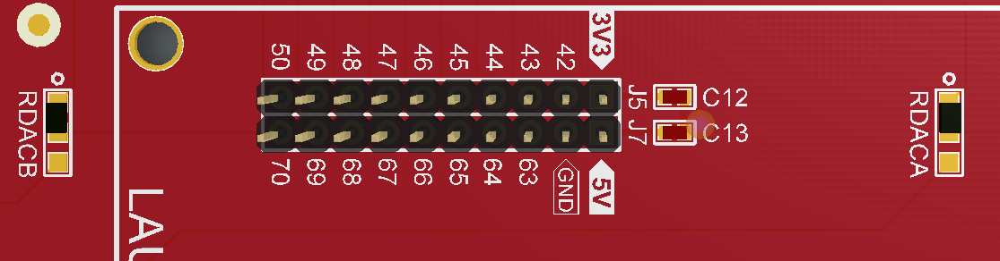
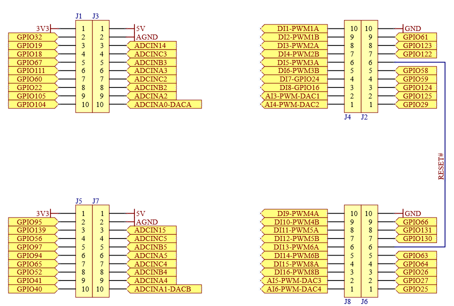
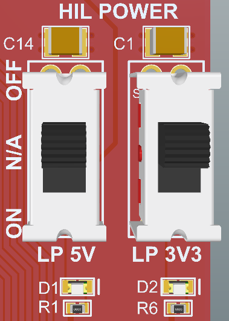
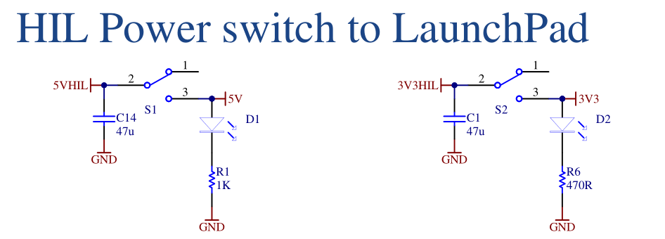

Detailed description
Detailed description of the HIL TI Launchpad Interface
The board features the following key sections, as shown in Figure 1.
- HIL Analog connector
- HIL Digital connector
- Measurement terminals
- Encoder Connectors
- PSU selector switches
- LaunchPad™ connector group
- Monitoring BNC connectors

HIL Analog Connector
This is a 96 pin DIN 41612/IEC receptacle connector that is directly pluggable into the Analog I/O connector, found on all Typhoon HIL hardware emulators. HIL Analog Connector shows how 20 analog signals (16 analog outputs and 4 analog inputs) from Typhoon HIL emulators are connected to the LaunchPad™ headers, for TI's LAUNCHXL-F28379D, LAUNCHXL-F28069M and LAUNCHXL-F28027F.
To protect against overvoltage conditions, HIL Analog Outputs feature series 120Ω RZ1-RZ16 resistors that, together with protection diodes (U2-U5), form a 0-3.3V referenced clamping circuit.
| HIL Analog Output | DSP signal (F28379D) | DSP signal (F28069M) | DSP signal (F28027F) |
|---|---|---|---|
| AO1 | ADCIN-14 | ADCINA7 | ADCINA7 |
|
AO2 |
ADCIN-C3 |
ADCINB1 | ADCINA3 |
| AO3 | ADCIN-B3 | ADCINA2 | ADCINA1 |
| AO4 | ADCIN-A3 | ADCINB2 | ADCINA0 |
| AO5 | ADCIN-C2 | ADCINA0 | ADCINB1 |
| AO6 | ADCIN-B2 | ADCINB0 | ADCINB3 |
| AO7 | ADCIN-A2 | ADCINA1 | ADCINB7 |
| AO8/AI1* | ADCIN-A0/DAC-A | NC | NC |
| AO9 | ADCIN–15 | ADCINB7 | NC |
| AO10 | ADCIN-C5 | ADCINB4 | NC |
| AO11 | ADCIN–B5 | ADCINA5 | NC |
| AO12 | ADCIN–A5 | ADCINB5 | NC |
| AO13 | ADCIN–C4 | ADCINA3 | NC |
| AO14 | ADCIN–B4 | ADCINB3 | NC |
| AO15 | ADCIN–A4 | ADCINA4 | NC |
| AO16/AI2* | ADCIN–A1/DAC-B | NC | NC |
| AI3 | PWM-DAC1 | DAC1 | NC |
| AI4 | PWM-DAC2 | DAC2 | NC |
| AI5 | PWM-DAC3 | DAC3 | NC |
| AI6 | PWM-DAC4 | DAC4 | NC |
* Depending on the position of RDACA or RDACB jumper resistors, this HIL AO or HIL AI may be routed to the DSP analog pin. By default, HIL AOs are routed to the DSP ADC.

HIL Digital Connector
This is a 96 pin DIN 41612/IEC receptacle connector that is directly pluggable into the Digital connector of the Typhoon HIL emulators, followed by three rows of measurement terminals. Table 2 shows how 32 digital signals (16 outputs and 16 inputs) from Typhoon HIL emulator are routed to the LaunchPad™ headers, for TI's LAUNCHXL-F28379D, LAUNCHXL-F28069M and LAUNCHXL-F28027F.
A total of 16 HIL digital outputs are level shifted from the HIL’s 5V to DSP’s 3.3V, using an SN74LVCH16T245 level shifter. Level shifter outputs can be enabled/disabled by resistor jumpers ROE1 (lower 8 outputs) and ROE2 (upper 8 outputs), to enable compatibility with more TI LaunchPad™ boards.
| HIL Digital Output signal | DSP signal (F28379D) | DSP signal (F28069M) | DSP signal (F28027F) |
|---|---|---|---|
| DO1 | GPIO-61 | GPIO19 | GPIO19 |
| DO2 | GPIO-123 | GPIO44 | GPIO12 |
| DO3 | GPIO-122 | NC | NC |
| DO4 | GPIO-58 | GPIO16 | GPIO16/GPIO32 |
| DO5 | GPIO-59 | GPIO17 | GPIO17/GPIO33 |
| DO6 | GPIO-124 | GPIO50 | GPIO6 |
| DO7 | GPIO-125 | GPIO21 | GPIO7 |
| DO8 | GPIO-29 | GPIO55 | ADCINB6 |
| DO9 | GPIO-66 | GPIO27 | NC |
| DO10 | GPIO-131 | GPIO26 | NC |
| DO11 | GPIO-130 | NC | NC |
| DO12 | GPIO-63 | GPIO24 | NC |
| DO13 | GPIO-64 | GPIO25 | NC |
| DO14 | GPIO-26 | GPIO52 | NC |
| DO15 | GPIO-27 | GPIO53 | NC |
| DO16 | GPIO-25 | GPIO56 | NC |
| HIL Digital Input signal | DSP signal (F28379D) | DSP signal (F28069M) | DSP signal (F28027F) |
|---|---|---|---|
| DI1 | GPIO-00/PWM-1A | GPIO0 | GPIO0 |
| DI2 | GPIO-01/PWM-1B | GPIO1 | GPIO1 |
| DI3 | GPIO-02/PWM-2A | GPIO2 | GPIO2 |
| DI4 | GPIO-03/PWM-2B | GPIO3 | GPIO3 |
| DI5 | GPIO-04/PWM-3A | GPIO4 | GPIO4 |
| DI6 | GPIO-05/PWM-3B | GPIO5 | GPIO5 |
| DI7 | GPIO-24 | GPIO13 | GPIO16/GPIO32 |
| DI8 | GPIO-16 | NC | GPIO17/GPIO33 |
| DI9 | GPIO-06/PWM-4A | GPIO6 | NC |
| DI10 | GPIO-07/PWM-4B | GPIO7 | NC |
| DI11 | GPIO-08/PWM-5A | GPIO8 | NC |
| DI12 | GPIO-09/PWM-5B | GPIO9 | NC |
| DI13 | GPIO-10/PWM-6A | GPIO10 | NC |
| DI14 | GPIO-11/PWM-6B | GPIO11 | NC |
| DI15 | GPIO-14/PWM-8A | NC | NC |
| DI16 | GPIO-15/PWM-8B | NC | NC |
Encoder connectors
This section consists of two 5-pin connectors, intended to be used to stimulate two encoder interfaces in the LaunchPad™ board: eQEP1 and eQEP2.
For this section, connection between the LaunchPad™ board and the Launchpad Interface should be made via two 5-pin ribbon cables, provided by Typhoon HIL.
| HIL Digital Output signal | DSP signal |
|---|---|
| DO17 | eQEP1A |
| DO18 | eQEP1B |
| DO19 | eQEP1I |
| DO20 | eQEP2A |
| DO21 | eQEP2B |
| DO22 | eQEP2I |
LaunchPad™ connector group
The LaunchPad™ connector group comprises of four 2x10 pin headers for TI LaunchPad™ boards, and a set of four 2x10 pin measurement terminals, with a pinout shown in Figure 3.

Power Supply
By default, all LaunchPad™ boards are powered via USB. With the HIL TI Launchpad Interface, these boards can be powered from HIL instead, thus enabling "standalone" operation.
Proceed with caution. Study the official schematic of the LaunchPad™ board carefully before making any changes. Before powering from HIL, disconnect and/or disable all USB power supplies present on the LaunchPad™ board itself, regardless of the USB cable connection.
Power selection is performed via two switches, labelled as "HIL POWER".


Monitoring BNC and measurement terminals
For easier access to the signals from the HIL setup, a total of 10 BNC, and a total of 192 measurement terminal posts are provided on the HIL TI Launchpad Interface.
“Texas Instruments“, “TI“, and "LaunchPad™" are registered trademarks of Texas Instruments Incorporated in the United States of America, or other countries, or both.